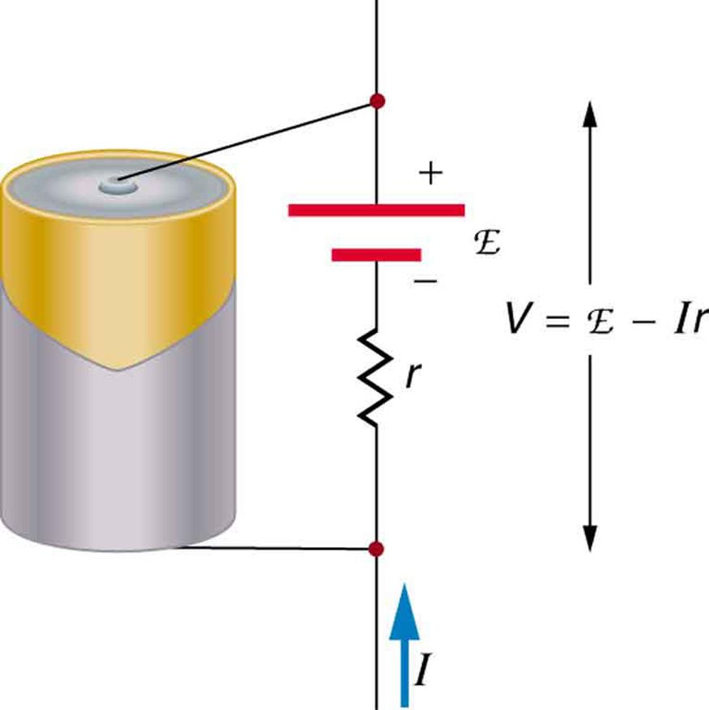
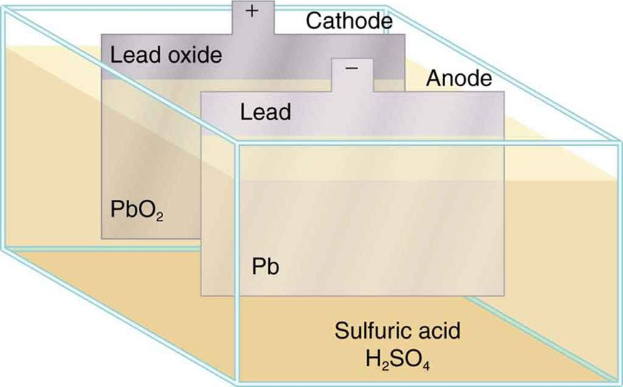
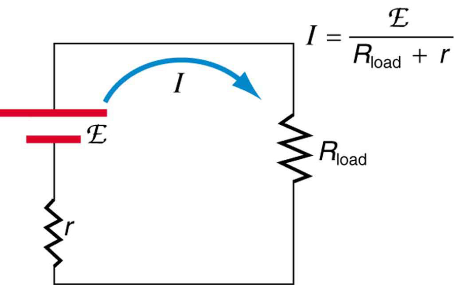
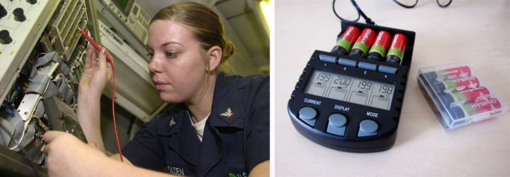
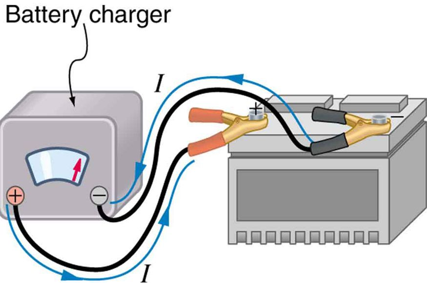
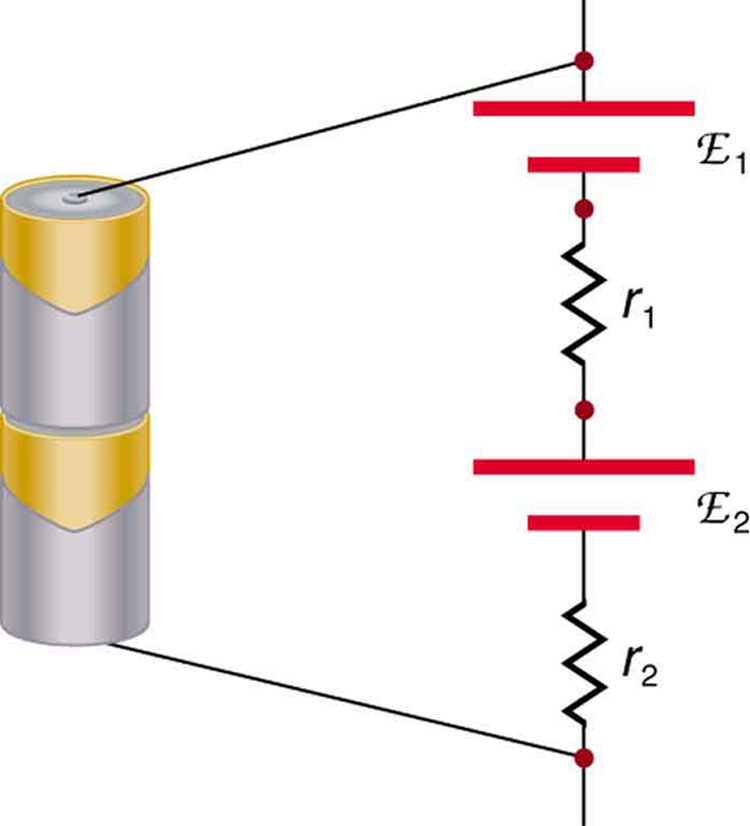
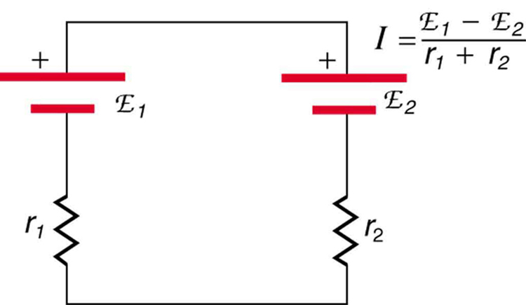
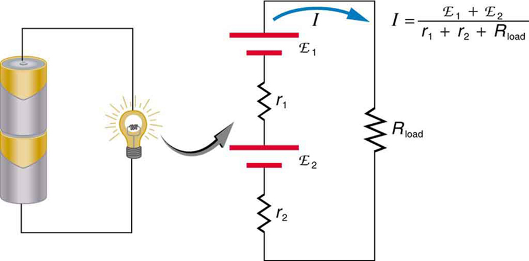
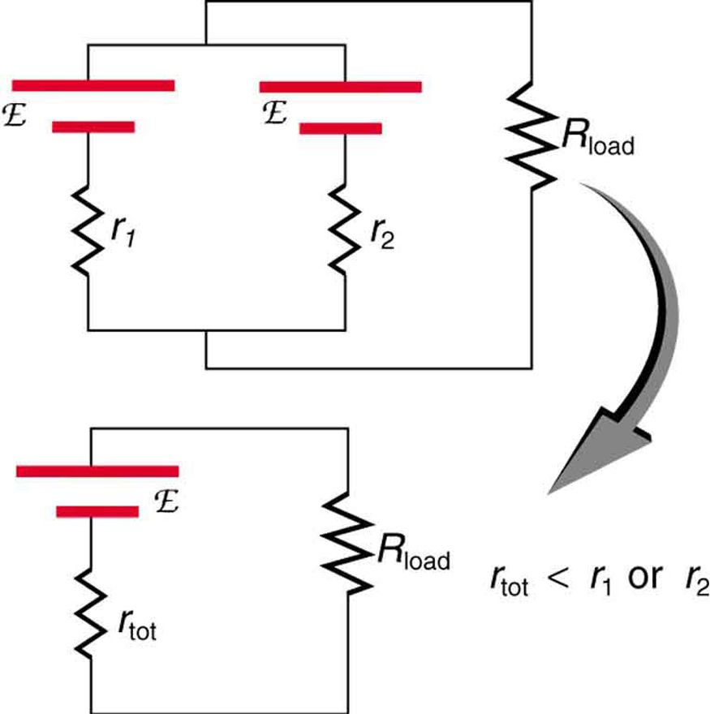

Compare and contrast the voltage and the electromagnetic force of an electric power source.
Describe what happens to the terminal voltage, current, and power delivered to a load as internal resistance of the voltage source increases (due to aging of batteries, for example).
Explain why it is beneficial to use more than one voltage source connected in parallel.
When you forget to turn off your car lights, they slowly dim as the battery runs down. Why don’t they simply blink off when the battery’s energy is gone? Their gradual dimming implies that battery output voltage decreases as the battery is depleted.
Furthermore, if you connect an excessive number of 12-V lights in parallel to a car battery, they will be dim even when the battery is fresh and even if the wires to the lights have very low resistance. This implies that the battery’s output voltage is reduced by the overload.
The reason for the decrease in output voltage for depleted or overloaded batteries is that all voltage sources have two fundamental parts—a source of electrical energy and an internal resistance. Let us examine both.
Electromotive Force
You can think of many different types of voltage sources. Batteries themselves come in many varieties. There are many types of mechanical/electrical generators, driven by many different energy sources, ranging from nuclear to wind. Solar cells create voltages directly from light, while thermoelectric devices create voltage from temperature differences.
A few voltage sources are shown in the figure. All such devices create a potential difference and can supply current if connected to a resistance. On the small scale, the potential difference creates an electric field that exerts force on charges, causing current. We thus use the name electromotive force, abbreviated emf.
Emf is not a force at all; it is a special type of potential difference. To be precise, the electromotive force (emf) is the potential difference of a source when no current is flowing. Units of emf are volts.
A variety of voltage sources (clockwise from top left): the Brazos Wind Farm in Fluvanna, Texas (credit: Leaflet, Wikimedia Commons); the Krasnoyarsk Dam in Russia (credit: Alex Polezhaev); a solar farm (credit: U.S. Department of Energy); and a group of nickel metal hydride batteries (credit: Tiaa Monto). The voltage output of each depends on its construction and load, and equals emf only if there is no load.
Electromotive force is directly related to the source of potential difference, such as the particular combination of chemicals in a battery. However, emf differs from the voltage output of the device when current flows. The voltage across the terminals of a battery, for example, is less than the emf when the battery supplies current, and it declines further as the battery is depleted or loaded down. However, if the device’s output voltage can be measured without drawing current, then output voltage will equal emf (even for a very depleted battery).
Internal Resistance
As noted before, a 12-V truck battery is physically larger, contains more charge and energy, and can deliver a larger current than a 12-V motorcycle battery. Both are lead-acid batteries with identical emf, but, because of its size, the truck battery has a smaller internal resistance . Internal resistance is the inherent resistance to the flow of current within the source itself.
the figure is a schematic representation of the two fundamental parts of any voltage source. The emf (represented by a script E in the figure) and internal resistance are in series. The smaller the internal resistance for a given emf, the more current and the more power the source can supply.

Any voltage source (in this case, an alkaline dry cell) has an emf related to its source of potential difference, and an internal resistance related to its construction. (Note that the script E stands for emf.). Also shown are the output terminals across which the terminal voltage is measured. Since , terminal voltage equals emf only if there is no current flowing.
The internal resistance can behave in complex ways. As noted, increases as a battery is depleted. But internal resistance may also depend on the magnitude and direction of the current through a voltage source, its temperature, and even its history. The internal resistance of rechargeable nickel-cadmium cells, for example, depends on how many times and how deeply they have been depleted.
Things Great and Small: The Submicroscopic Origin of Battery Potential
Various types of batteries are available, with emfs determined by the combination of chemicals involved. We can view this as a molecular reaction (what much of chemistry is about) that separates charge.
The lead-acid battery used in cars and other vehicles is one of the most common types. A single cell (one of six) of this battery is seen in the figure. The cathode (positive) terminal of the cell is connected to a lead oxide plate, while the anode (negative) terminal is connected to a lead plate. Both plates are immersed in sulfuric acid, the electrolyte for the system.

Artist’s conception of a lead-acid cell. Chemical reactions in a lead-acid cell separate charge, sending negative charge to the anode, which is connected to the lead plates. The lead oxide plates are connected to the positive or cathode terminal of the cell. Sulfuric acid conducts the charge as well as participating in the chemical reaction.
The details of the chemical reaction are left to the reader to pursue in a chemistry text, but their results at the molecular level help explain the potential created by the battery. the figure shows the result of a single chemical reaction. Two electrons are placed on the anode, making it negative, provided that the cathode supplied two electrons. This leaves the cathode positively charged, because it has lost two electrons. In short, a separation of charge has been driven by a chemical reaction.
Note that the reaction will not take place unless there is a complete circuit to allow two electrons to be supplied to the cathode. Under many circumstances, these electrons come from the anode, flow through a resistance, and return to the cathode. Note also that since the chemical reactions involve substances with resistance, it is not possible to create the emf without an internal resistance.
Artist’s conception of two electrons being forced onto the anode of a cell and two electrons being removed from the cathode of the cell. The chemical reaction in a lead-acid battery places two electrons on the anode and removes two from the cathode. It requires a closed circuit to proceed, since the two electrons must be supplied to the cathode.
Why are the chemicals able to produce a unique potential difference? Quantum mechanical descriptions of molecules, which take into account the types of atoms and numbers of electrons in them, are able to predict the energy states they can have and the energies of reactions between them.
In the case of a lead-acid battery, an energy of 2 eV is given to each electron sent to the anode. Voltage is defined as the electrical potential energy divided by charge: . An electron volt is the energy given to a single electron by a voltage of 1 V. So the voltage here is 2 V, since 2 eV is given to each electron. It is the energy produced in each molecular reaction that produces the voltage. A different reaction produces a different energy and, hence, a different voltage.
Terminal Voltage
The voltage output of a device is measured across its terminals and, thus, is called its terminal voltage. Terminal voltage is given by
where is the internal resistance and is the current flowing at the time of the measurement.
is positive if current flows away from the positive terminal, as shown in the figure. You can see that the larger the current, the smaller the terminal voltage. And it is likewise true that the larger the internal resistance, the smaller the terminal voltage.
Suppose a load resistance is connected to a voltage source, as in the figure. Since the resistances are in series, the total resistance in the circuit is . Thus the current is given by Ohm’s law to be

Schematic of a voltage source and its load . Since the internal resistance is in series with the load, it can significantly affect the terminal voltage and current delivered to the load. (Note that the script E stands for emf.)
We see from this expression that the smaller the internal resistance , the greater the current the voltage source supplies to its load . As batteries are depleted, increases. If becomes a significant fraction of the load resistance, then the current is significantly reduced, as the following example illustrates.
Calculating Terminal Voltage, Power Dissipation, Current, and Resistance: Terminal Voltage and Load
A certain battery has a 12.0-V emf and an internal resistance of . (a) Calculate its terminal voltage when connected to a load. (b) What is the terminal voltage when connected to a load? (c) What power does the load dissipate? (d) If the internal resistance grows to , find the current, terminal voltage, and power dissipated by a load.
Strategy
The analysis above gave an expression for current when internal resistance is taken into account. Once the current is found, the terminal voltage can be calculated using the equation . Once current is found, the power dissipated by a resistor can also be found.
Solution for (a)
Entering the given values for the emf, load resistance, and internal resistance into the expression above yields
Enter the known values into the equation to get the terminal voltage:
Discussion for (a)
The terminal voltage here is only slightly lower than the emf, implying that is a light load for this particular battery.
Solution for (b)
Similarly, with , the current is
The terminal voltage is now
Discussion for (b)
This terminal voltage exhibits a more significant reduction compared with emf, implying is a heavy load for this battery.
Solution for (c)
The power dissipated by the load can be found using the formula . Entering the known values gives
Discussion for (c)
Note that this power can also be obtained using the expressions or , where is the terminal voltage (10.0 V in this case).
Solution for (d)
Here the internal resistance has increased, perhaps due to the depletion of the battery, to the point where it is as great as the load resistance. As before, we first find the current by entering the known values into the expression, yielding
Now the terminal voltage is
and the power dissipated by the load is
Discussion for (d)
We see that the increased internal resistance has significantly decreased terminal voltage, current, and power delivered to a load.
Battery testers, such as those in the figure, use small load resistors to intentionally draw current to determine whether the terminal voltage drops below an acceptable level. They really test the internal resistance of the battery. If internal resistance is high, the battery is weak, as evidenced by its low terminal voltage.

These two battery testers measure terminal voltage under a load to determine the condition of a battery. The large device is being used by a U.S. Navy electronics technician to test large batteries aboard the aircraft carrier USS Nimitz and has a small resistance that can dissipate large amounts of power. (credit: U.S. Navy photo by Photographer’s Mate Airman Jason A. Johnston) The small device is used on small batteries and has a digital display to indicate the acceptability of their terminal voltage. (credit: Keith Williamson)
Some batteries can be recharged by passing a current through them in the direction opposite to the current they supply to a resistance. This is done routinely in cars and batteries for small electrical appliances and electronic devices, and is represented pictorially in the figure. The voltage output of the battery charger must be greater than the emf of the battery to reverse current through it. This will cause the terminal voltage of the battery to be greater than the emf, since , and is now negative.

A car battery charger reverses the normal direction of current through a battery, reversing its chemical reaction and replenishing its chemical potential.
Multiple Voltage Sources
There are two voltage sources when a battery charger is used. Voltage sources connected in series are relatively simple. When voltage sources are in series, their internal resistances add and their emfs add algebraically. (See the figure.) Series connections of voltage sources are common—for example, in flashlights, toys, and other appliances. Usually, the cells are in series in order to produce a larger total emf.
But if the cells oppose one another, such as when one is put into an appliance backward, the total emf is less, since it is the algebraic sum of the individual emfs.
A battery is a multiple connection of voltaic cells, as shown in the figure. The disadvantage of series connections of cells is that their internal resistances add. One of the authors once owned a 1957 MGA that had two 6-V batteries in series, rather than a single 12-V battery. This arrangement produced a large internal resistance that caused him many problems in starting the engine.

A series connection of two voltage sources. The emfs (each labeled with a script E) and internal resistances add, giving a total emf of and a total internal resistance of .Batteries are multiple connections of individual cells, as shown in this modern rendition of an old print. Single cells, such as AA or C cells, are commonly called batteries, although this is technically incorrect.
If the series connection of two voltage sources is made into a complete circuit with the emfs in opposition, then a current of magnitude flows. See the figure, for example, which shows a circuit exactly analogous to the battery charger discussed above. If two voltage sources in series with emfs in the same sense are connected to a load , as in the figure, then
flows.

These two voltage sources are connected in series with their emfs in opposition. Current flows in the direction of the greater emf and is limited to by the sum of the internal resistances. (Note that each emf is represented by script E in the figure.) A battery charger connected to a battery is an example of such a connection. The charger must have a larger emf than the battery to reverse current through it.

This schematic represents a flashlight with two cells (voltage sources) and a single bulb (load resistance) in series. The current that flows is . (Note that each emf is represented by script E in the figure.)
Take-Home Experiment: Flashlight Batteries
Find a flashlight that uses several batteries and find new and old batteries. Based on the discussions in this module, predict the brightness of the flashlight when different combinations of batteries are used. Do your predictions match what you observe? Now place new batteries in the flashlight and leave the flashlight switched on for several hours. Is the flashlight still quite bright? Do the same with the old batteries. Is the flashlight as bright when left on for the same length of time with old and new batteries? What does this say for the case when you are limited in the number of available new batteries?
the figure shows two voltage sources with identical emfs in parallel and connected to a load resistance. In this simple case, the total emf is the same as the individual emfs. But the total internal resistance is reduced, since the internal resistances are in parallel. The parallel connection thus can produce a larger current.
Here, flows through the load, and is less than those of the individual batteries. For example, some diesel-powered cars use two 12-V batteries in parallel; they produce a total emf of 12 V but can deliver the larger current needed to start a diesel engine.

Two voltage sources with identical emfs (each labeled by script E) connected in parallel produce the same emf but have a smaller total internal resistance than the individual sources. Parallel combinations are often used to deliver more current. Here flows through the load.
Animals as Electrical Detectors
A number of animals both produce and detect electrical signals. Fish, sharks, platypuses, and echidnas (spiny anteaters) all detect electric fields generated by nerve activity in prey. Electric eels produce their own emf through biological cells (electric organs) called electroplaques, which are arranged in both series and parallel as a set of batteries.
Electroplaques are flat, disk-like cells; those of the electric eel have a voltage of 0.15 V across each one. These cells are usually located toward the head or tail of the animal, although in the case of the electric eel, they are found along the entire body. The electroplaques in the South American eel are arranged in 140 rows, with each row stretching horizontally along the body and containing 5,000 electroplaques. This can yield an emf of approximately 600 V, and a current of 1 A—deadly.
The mechanism for detection of external electric fields is similar to that for producing nerve signals in the cell through depolarization and repolarization—the movement of ions across the cell membrane. Within the fish, weak electric fields in the water produce a current in a gel-filled canal that runs from the skin to sensing cells, producing a nerve signal. The Australian platypus, one of the very few mammals that lay eggs, can detect fields of 30 , while sharks have been found to be able to sense a field in their snouts as small as 100 (the figure). Electric eels use their own electric fields produced by the electroplaques to stun their prey or enemies.
Sand tiger sharks (Carcharias taurus), like this one at the Minnesota Zoo, use electroreceptors in their snouts to locate prey. (credit: Jim Winstead, Flickr)
Solar Cell Arrays
Another example dealing with multiple voltage sources is that of combinations of solar cells—wired in both series and parallel combinations to yield a desired voltage and current. Photovoltaic generation (PV), the conversion of sunlight directly into electricity, is based upon the photoelectric effect, in which photons hitting the surface of a solar cell create an electric current in the cell.
Most solar cells are made from pure silicon—either as single-crystal silicon, or as a thin film of silicon deposited upon a glass or metal backing. Most single cells have a voltage output of about 0.5 V, while the current output is a function of the amount of sunlight upon the cell (the incident solar radiation—the insolation). Under bright noon sunlight, a current of about of cell surface area is produced by typical single-crystal cells.
Individual solar cells are connected electrically in modules to meet electrical-energy needs. They can be wired together in series or in parallel—connected like the batteries discussed earlier. A solar-cell array or module usually consists of between 36 and 72 cells, with a power output of 50 W to 140 W.
The output of the solar cells is direct current. For most uses in a home, AC is required, so a device called an inverter must be used to convert the DC to AC. Any extra output can then be passed on to the outside electrical grid for sale to the utility.
Take-Home Experiment: Virtual Solar Cells
One can assemble a “virtual” solar cell array by using playing cards, or business or index cards, to represent a solar cell. Combinations of these cards in series and/or parallel can model the required array output. Assume each card has an output of 0.5 V and a current (under bright light) of 2 A. Using your cards, how would you arrange them to produce an output of 6 A at 3 V (18 W)?
Suppose you were told that you needed only 18 W (but no required voltage). Would you need more cards to make this arrangement?
Test Prep for AP Courses
Suppose there are two voltage sources – Sources A and B – with the same emfs but different internal resistances, i.e., the internal resistance of Source A is lower than Source B. If they both supply the same current in their circuits, which of the following statements is true?
External resistance in Source A’s circuit is more than Source B’s circuit.
External resistance in Source A’s circuit is less than Source B’s circuit.
External resistance in Source A’s circuit is the same as Source B’s circuit.
The relationship between external resistances in the two circuits can’t be determined.
Calculate the internal resistance of a voltage source if the terminal voltage of the source increases by 1 V when the current supplied decreases by 4 A? Suppose this source is connected in series (in the same direction) to another source with a different voltage but same internal resistance. What will be the total internal resistance? How will the total internal resistance change if the sources are connected in the opposite direction?
0.25 Ω, 0.50 Ω, no change
Section Summary
All voltage sources have two fundamental parts—a source of electrical energy that has a characteristic electromotive force (emf), and an internal resistance .
The emf is the potential difference of a source when no current is flowing.
The numerical value of the emf depends on the source of potential difference.
The internal resistance of a voltage source affects the output voltage when a current flows.
The voltage output of a device is called its terminal voltage and is given by , where is the electric current and is positive when flowing away from the positive terminal of the voltage source.
When multiple voltage sources are in series, their internal resistances add and their emfs add algebraically.
Solar cells can be wired in series or parallel to provide increased voltage or current, respectively.
Conceptual Questions
Is every emf a potential difference? Is every potential difference an emf? Explain.
Explain which battery is doing the charging and which is being charged in the figure.
Given a battery, an assortment of resistors, and a variety of voltage and current measuring devices, describe how you would determine the internal resistance of the battery.
Two different 12-V automobile batteries on a store shelf are rated at 600 and 850 “cold cranking amps.” Which has the smallest internal resistance?
What are the advantages and disadvantages of connecting batteries in series? In parallel?
Semitractor trucks use four large 12-V batteries. The starter system requires 24 V, while normal operation of the truck’s other electrical components utilizes 12 V. How could the four batteries be connected to produce 24 V? To produce 12 V? Why is 24 V better than 12 V for starting the truck’s engine (a very heavy load)?
Problem Exercises
Standard automobile batteries have six lead-acid cells in series, creating a total emf of 12.0 V. What is the emf of an individual lead-acid cell?
2.00 V
Carbon-zinc dry cells (sometimes referred to as non-alkaline cells) have an emf of 1.54 V, and they are produced as single cells or in various combinations to form other voltages. (a) How many 1.54-V cells are needed to make the common 9-V battery used in many small electronic devices? (b) What is the actual emf of the approximately 9-V battery? (c) Discuss how internal resistance in the series connection of cells will affect the terminal voltage of this approximately 9-V battery.
What is the output voltage of a 3.0000-V lithium cell in a digital wristwatch that draws 0.300 mA, if the cell’s internal resistance is ?
2.9994 V
(a) What is the terminal voltage of a large 1.54-V carbon-zinc dry cell used in a physics lab to supply 2.00 A to a circuit, if the cell’s internal resistance is ? (b) How much electrical power does the cell produce? (c) What power goes to its load?
What is the internal resistance of an automobile battery that has an emf of 12.0 V and a terminal voltage of 15.0 V while a current of 8.00 A is charging it?
(a) Find the terminal voltage of a 12.0-V motorcycle battery having a internal resistance, if it is being charged by a current of 10.0 A. (b) What is the output voltage of the battery charger?
A car battery with a 12-V emf and an internal resistance of is being charged with a current of 60 A. Note that in this process the battery is being charged. (a) What is the potential difference across its terminals? (b) At what rate is thermal energy being dissipated in the battery? (c) At what rate is electric energy being converted to chemical energy? (d) What are the answers to (a) and (b) when the battery is used to supply 60 A to the starter motor?
The hot resistance of a flashlight bulb is , and it is run by a 1.58-V alkaline cell having a internal resistance. (a) What current flows? (b) Calculate the power supplied to the bulb using . (c) Is this power the same as calculated using ?
(a) 0.658 A
(b) 0.997 W
(c) 0.997 W; yes
The label on a portable radio recommends the use of rechargeable nickel-cadmium cells (nicads), although they have a 1.25-V emf while alkaline cells have a 1.58-V emf. The radio has a resistance. (a) Draw a circuit diagram of the radio and its batteries. Now, calculate the power delivered to the radio. (b) When using Nicad cells each having an internal resistance of . (c) When using alkaline cells each having an internal resistance of . (d) Does this difference seem significant, considering that the radio’s effective resistance is lowered when its volume is turned up?
An automobile starter motor has an equivalent resistance of and is supplied by a 12.0-V battery with a internal resistance. (a) What is the current to the motor? (b) What voltage is applied to it? (c) What power is supplied to the motor? (d) Repeat these calculations for when the battery connections are corroded and add to the circuit. (Significant problems are caused by even small amounts of unwanted resistance in low-voltage, high-current applications.)
(a) 200 A
(b) 10.0 V
(c) 2.00 kW
(d)
A child’s electronic toy is supplied by three 1.58-V alkaline cells having internal resistances of in series with a 1.53-V carbon-zinc dry cell having a internal resistance. The load resistance is . (a) Draw a circuit diagram of the toy and its batteries. (b) What current flows? (c) How much power is supplied to the load? (d) What is the internal resistance of the dry cell if it goes bad, resulting in only 0.500 W being supplied to the load?
(a) What is the internal resistance of a voltage source if its terminal voltage drops by 2.00 V when the current supplied increases by 5.00 A? (b) Can the emf of the voltage source be found with the information supplied?
(a)
(b) No, there is only one independent equation, so only can be found.
A person with body resistance between his hands of accidentally grasps the terminals of a 20.0-kV power supply. (Do NOT do this!) (a) Draw a circuit diagram to represent the situation. (b) If the internal resistance of the power supply is , what is the current through his body? (c) What is the power dissipated in his body? (d) If the power supply is to be made safe by increasing its internal resistance, what should the internal resistance be for the maximum current in this situation to be 1.00 mA or less? (e) Will this modification compromise the effectiveness of the power supply for driving low-resistance devices? Explain your reasoning.
Electric fish generate current with biological cells called electroplaques, which are physiological emf devices. The electroplaques in the South American eel are arranged in 140 rows, each row stretching horizontally along the body and each containing 5000 electroplaques. Each electroplaque has an emf of 0.15 V and internal resistance of . If the water surrounding the fish has resistance of , how much current can the eel produce in water from near its head to near its tail?
Integrated Concepts
A 12.0-V emf automobile battery has a terminal voltage of 16.0 V when being charged by a current of 10.0 A. (a) What is the battery’s internal resistance? (b) What power is dissipated inside the battery? (c) At what rate (in ) will its temperature increase if its mass is 20.0 kg and it has a specific heat of , assuming no heat escapes?
Unreasonable Results
A 1.58-V alkaline cell with a internal resistance is supplying 8.50 A to a load. (a) What is its terminal voltage? (b) What is the value of the load resistance? (c) What is unreasonable about these results? (d) Which assumptions are unreasonable or inconsistent?
(d) The assumption that such a cell could provide 8.50 A is inconsistent with its internal resistance.
Unreasonable Results
(a) What is the internal resistance of a 1.54-V dry cell that supplies 1.00 W of power to a bulb? (b) What is unreasonable about this result? (c) Which assumptions are unreasonable or inconsistent?
Key terms
electromotive force (emf) the potential difference of a source of electricity when no current is flowing; measured in volts
internal resistance the amount of resistance within the voltage source
potential difference the difference in electric potential between two points in an electric circuit, measured in volts
terminal voltage the voltage measured across the terminals of a source of potential difference
![The diagram shows a simplified view of a battery depicting a rectangular container containing two thin upright metal plates immersed in a liquid. An enlarged view of the metal plates is also shown. One plate has positive charges on it shown as small spheres enclosing a positive sign. The other plate has negative charge on it shown as small spheres enclosing an electron. The electrons are shown to move from the positive plate to the negative plate using arrows through a molecular reaction in the liquid.](Figure_22_02_04.jpg)